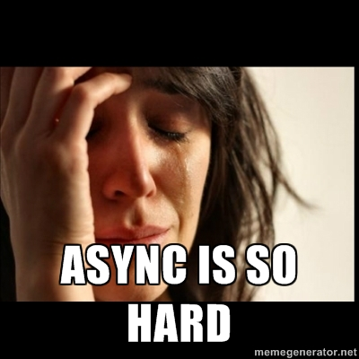

Deferred Object
What's the problem?
It all starts with an innocent little ajax request:
var data;
$.get('api/data', function(resp) {
data = resp.data;
});
doSomethingFancyWithData(data);
Where's my data?

Asychronicity
- Sequencing is hard and leads to:
- Continuation Passing Style (CPS).
- Deep nesting.
- 'Callback hell'.
- Parallelizing is even harder.
Sequencing
// Demonstrates nesting, CPS, 'callback hell'
//
$.get('api1/data', function(resp1) {
// Next that depended on the first response.
$.get('api2/data', function(resp2) {
// Next request that depended on the second response.
$.get('api3/data', function(resp3) {
// Next request that depended on the third response.
$.get(); // ... you get the idea.
});
});
});
Parallelizing
$.get('api1/data', function(resp1) { trackMe(); });
$.get('api2/data', function(resp2) { trackMe(); });
$.get('api3/data', function(resp3) { trackMe(); });
var trackedCount = 0;
function trackMe() {
++trackedCount;
if (trackedCount === 3) {
doSomethingThatNeededAllThree();
}
}
Give me something better.
The Players
// The deferred object itself.
var def = $.Deferred;
// And the deferred's promise object.
def.promise();
$.Deferred()
def;
> { always: function() {},
done: function() {},
fail: function() {},
notify: function() {},
notifyWith: function() {},
pipe: function() {},
progress: function() {},
promise: function() {},
reject: function() {},
rejectWith: function() {},
resolve: function() {},
resolveWith: function() {},
state: function() {},
then: function() {} }
promise()
// A read-only version of the deferred object;
// returned from a jQuery $.ajax() call.
def.promise();
> { always: function() {},
done: function() {},
fail: function() {},
pipe: function() {},
progress: function() {},
promise: function() {},
state: function() {},
then: function() {} }
The Changers
resolve()
var deferred = $.Deferred();
deferred.promise().state();
> "pending"
deferred.resolve();
deferred.promise().state();
> "resolved"
reject()
var deferred = $.Deferred();
deferred.promise().state();
> "pending"
deferred.reject();
deferred.promise().state();
> "rejected"
pipe()
var deferred = $.Deferred();
deferred.pipe(
function(resp) {
console.log("I filter done responses", resp);
},
function(resp) {
console.log("I filter fail responses", resp);
},
function(resp) {
console.log("I filter progress responses", resp);
}
);
The Responders
done()
var deferred = $.Deferred();
deferred.resolve();
deferred.done(function() {
console.log("I get called when things go well.");
});
fail()
var deferred = $.Deferred();
deferred.reject();
deferred.fail(function() {
console.log("I get called when things fall apart.");
});
always()
var deferred = $.Deferred();
deferred.resolve();
deferred.always(function() {
console.log("I'm so popular, I get called no matter what.");
});
then()
var deferred = $.Deferred();
// Shorthand for done, fail, and always.
deferred.then(
function(resp) {
console.log("I'm a done callback!", resp);
},
function(resp) {
console.log("I'm a fail callback.", resp);
},
function(resp) {
console.log("I'm an always callback.", resp);
}
);
How does it solve our problems?
Sequencing mess
$.get('api1/data', function(resp1) {
// Next that depended on the first response.
$.get('api2/data', function(resp2) {
// Next request that depended on the second response.
$.get('api3/data', function(resp3) {
// Next request that depended on the third response.
});
});
});
Deferred sequencing
var req1 = $.get('api1/data');
var req2 = $.get('api2/data');
var req3 = $.get('api3/data');
req1.then(function(req1Data) {
return req2;
}).then(function(req2Data) {
return req3;
});
req2.then(function(req2Data) {
// Do something somewhere entirely different.
});
Ugly Parallel Requests
$.get('api1/data', function(resp1) { trackMe(); });
$.get('api2/data', function(resp2) { trackMe(); });
$.get('api3/data', function(resp3) { trackMe(); });
var trackedCount = 0;
function trackMe() {
++trackedCount;
if (trackedCount === 3) {
doSomethingThatNeededAllThree();
}
}
Deferred Parallelization
$.when(
$.get('api1/data'),
$.get('api2/data'),
$.get('api3/data'),
{ key: 'value' }
).done();
Filtered responses
var getArticleByHeadline = function(query) {
return $.ajax({ url: 'api/articles' })
.pipe(function(data) {
// Filter article headlines by query.
});
}
getArticleByHeadline('wins election').done(function(articles) {
// Do with the articles.
});
Create your own deferred
function showSpinner(){
var deferred = $.Deferred();
$('#spinner').fadeIn(1000, deferred.resolve);
return deferred.promise();
}
function disableInputs(){ /* Disable form, return promise */ }
function postData(){ return $.post('api/'); }
$.when(showSpinner, disableInputs, postData)
.done(function() { /* Clear form */ })
.fail(function() { /* Don't clear form, show error */ })
.always(function() { /* Hide spinner, re-enable form */ });
Summary
- Use a deferred when you need to guarantee something has completed before proceeding.
- Improves code composition:
- flat
- decoupled
- Good for AJAX and non-AJAX i.e., anything async.